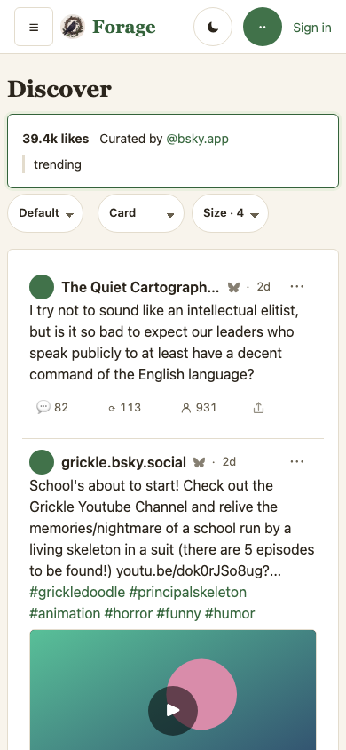
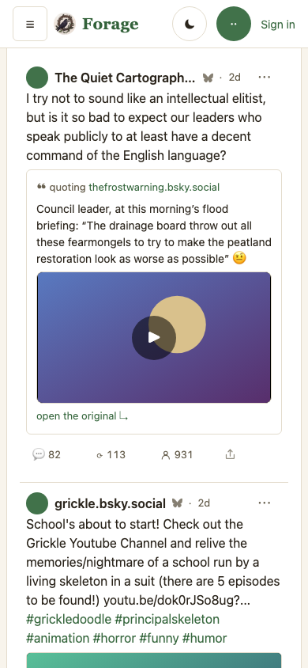
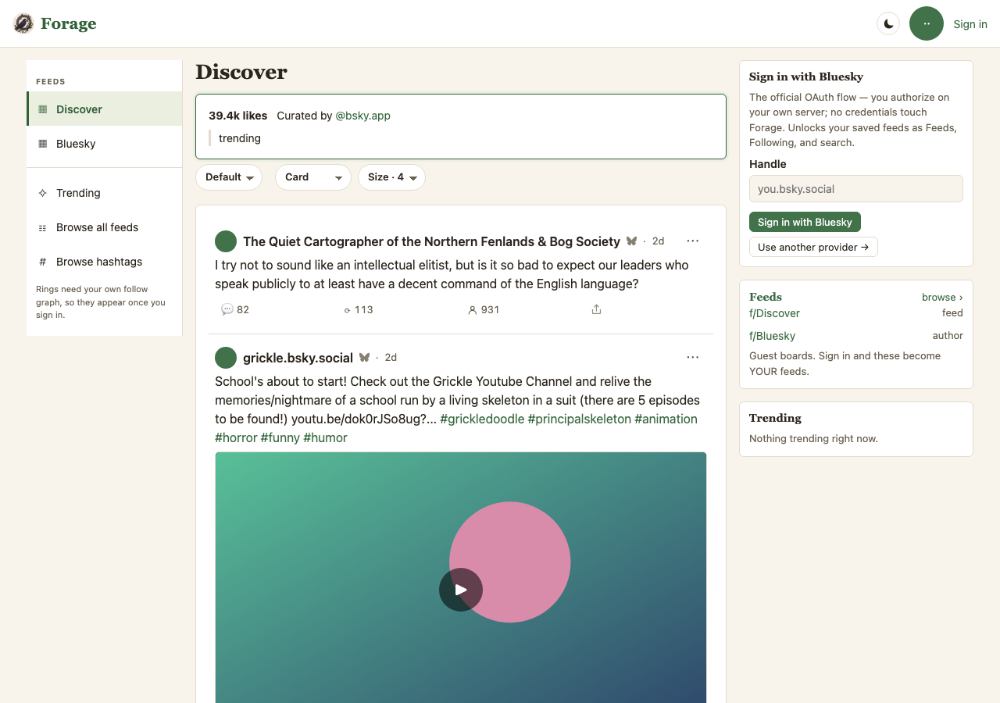
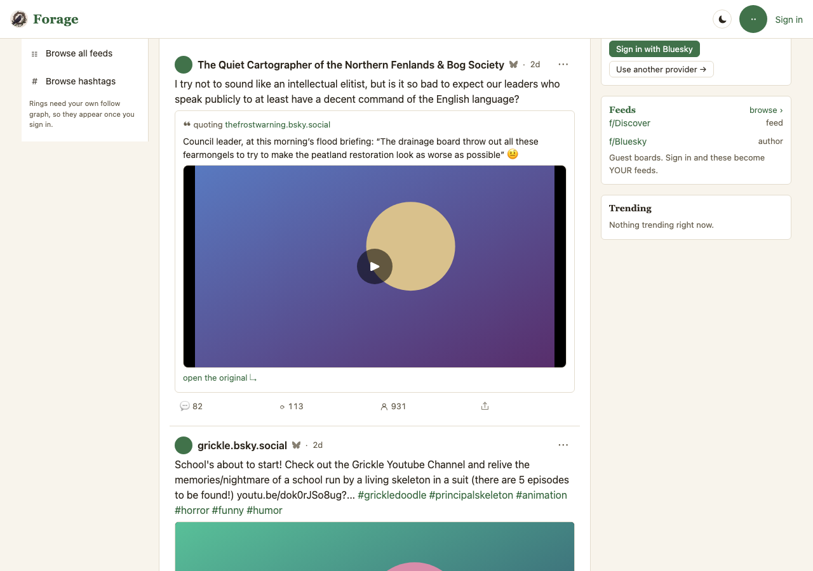
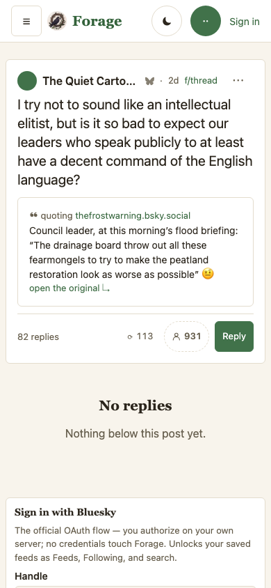
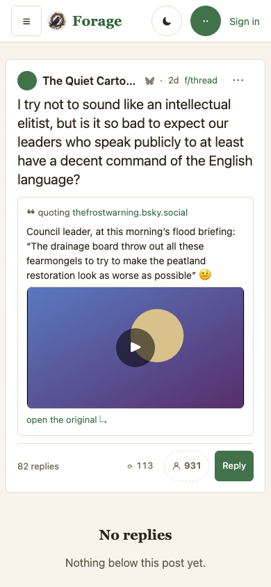
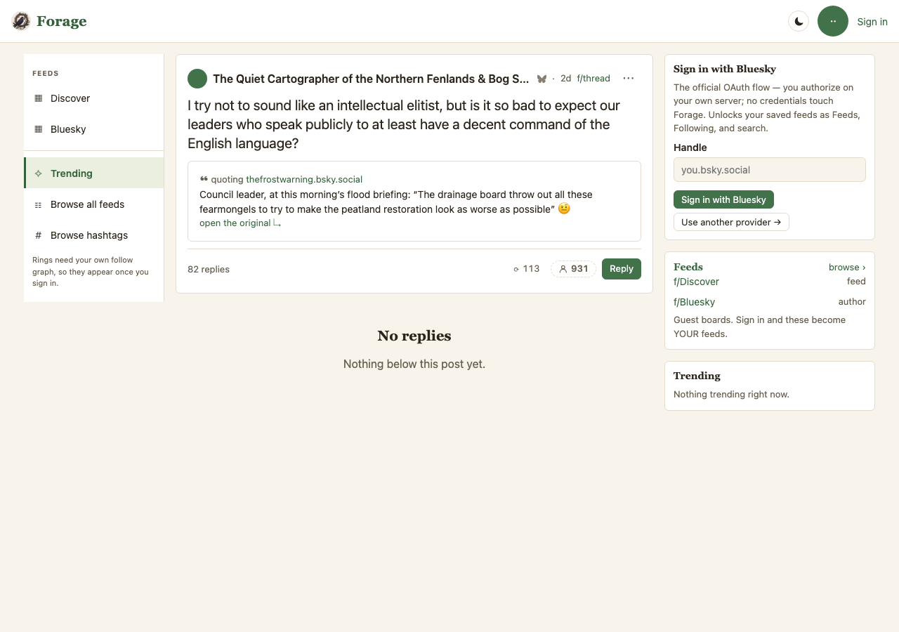
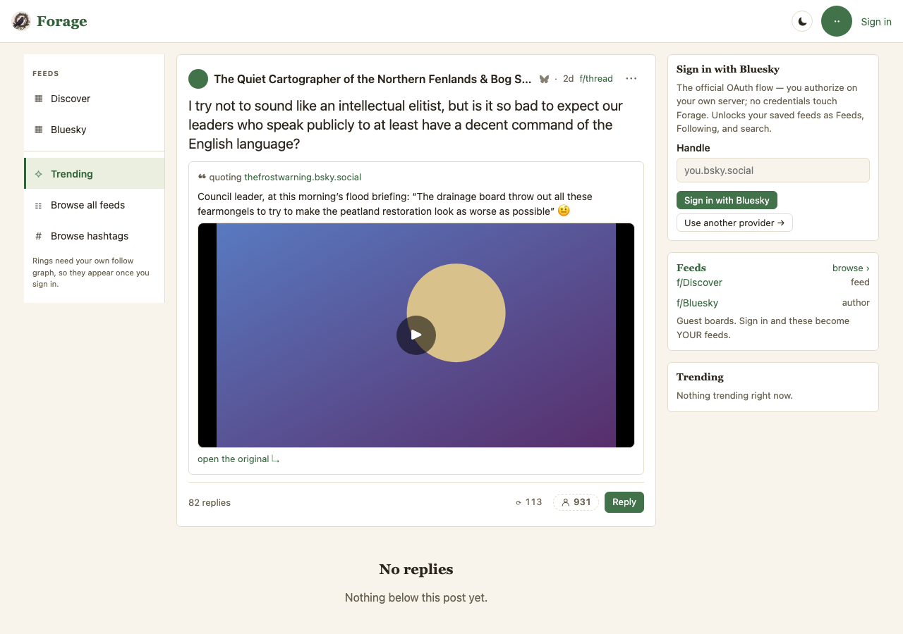

One proposal in four decisions, from the owner's report on a live post
(jwwhiley.bsky.social/post/3muhq4vkfes2r, a quote of an Aaron Rupar video):
“we are not represnting hte quoted content … until you enter the post page …
both in terms of showing what's being quoted and rendering the video.”
Two holes, one cause. The feed row drew the quoter's sentence over nothing at all.
The post page drew the quoted words and dropped the video the post exists to point at.
Every frame here is a capture of the engine (MOCKS.md P1): Current is
main at c4468e8, Proposed is claude/quote-embed at
d27ac4a, both by scripts/mock-snaps.mjs against
e2e/harness/mock-board.mjs, in the default skin (rule 4), at 390×844 and
1280×900. Captures live in plans/mocks/snaps/quote-embed/ (rule 3: a mock's
pixels are its own).
The population carries the load the report carried (P2): the quoted post's words run three
lines on a phone, the quoter's four, the counts are the live ones from that post
(82 replies · 113 · 931), and the quoted video's aspect is the 16:9 the record declares
— so the row has to hold two paragraphs and a stage without the quote growing taller
than the post quoting it.
Each is built and captured; “yes” on a row is “yes” to the frame below it.
| # | Decision | What it does | Rejected | Held by |
|---|---|---|---|---|
| 1 | The quoted post rides in the feed row (owner: “we are not represnting hte quoted content”) | A quote post's row shows the card it quotes — author, words, and the quoted post's own media — under the quoter's text and above the action row. In both densities: feed-row v1's rule is that compact tightens a row without taking the post's content out of it, and a quote's content is the quote. | A “quoting @someone” line with no words (names the author, still hides the subject); showing it in card density only (the owner's phone runs compact) | render-matrix shape quotetext, on the row surface and again at compact |
| 2 | The quoted post brings its own media (owner: “and rendering the video”) | The quoted post's picture, video or link card renders inside the quote card, through the same mediaNode every other surface uses — so a quoted video plays in place exactly as a first-class one does (v13 decision 30). Its stage is capped at 320px rather than the board's 520, so the quote never stands taller than the post quoting it. |
A “▶ video” chip linking out to bsky.app (v13 decision 30 already rejected that for the post's own video, and a quoted one is not a lesser video); the full 520px cap | render-matrix shapes quotevideo, quotepic, quoteext, rwm — on both surfaces |
| 3 | A quote whose original is gone says which way it is gone | Deleted, blocked, or detached by its author each render as one line of plain words. The old guard keyed on the record's uri — which all three carry — so they drew a card reading “❝ quoting [unknown]” over an empty excerpt. That was one bad card on the post page; with decision 1 it would have been one on every such row in the feed. |
Rendering them the same as a live quote (what shipped); hiding them entirely (the post's words refer to something, and silence is not honest about what) | render-matrix shape quotegone (asserts the data-quoted reason, not just the count) |
| 4 | Quoting a feed is not quoting a post | A post that embeds a feed generator, a list or a starter pack shapes to no quoted post at all, rather than to a post card with an empty excerpt. Drawing the feed's own card is a separate decision and is not proposed here. | Drawing it as a post card (what shipped); inventing a feed card in this change (unasked, and a different surface) | render-matrix shape quotefeed |
Current is the report: the quoter's sentence, then the counts, then the next post. Nothing says
what is being talked about, and the video is not on this screen at all. Proposed puts the quoted post under the
words, with its video on a stage that plays where it sits.
Current did not scroll — the capture script scrolls to the quote card, and on main
there is none to scroll to, so Current shows the top of the same board. The quote row is the first one under the header.




This is the surface that already showed something — the quoted author and the quoted words — and that is what made the gap hard to see: the page looked complete while the video, the whole reason the post exists, was missing. Proposed renders it, at the quote's shorter cap.




The owner asked for this directly, mid-change: “we should build in tests for rendering expectations bc we keep fixing them bit by bit and I'm worried one is breaking or can break another.” That is the honest history of this surface — five separate repairs, each with its own narrow check, none able to see the others:
| When | The repair |
|---|---|
| 2026-08-28 | an image post's thread page rendered no image at all |
| 2026-08-30 | the picture the thread page rendered was missing from the feed |
| 2026-08-30 | a native video opened on bsky.app instead of playing in place (v13 decision 30) |
| 2026-09-01 | a link card with no og:image produced no media and a dead link (post-text) |
| 2026-09-01 | a quote post showed neither what it quoted nor the quoted post's video (this mock) |
Every one of those is the same question asked about a different shape: given this embed, what does each surface
draw? So it is now asked once, as a table — e2e/render-matrix.workflow.mjs, in the gate:
.stage would have
passed through this whole bug; a quoted video is not the quoting post's video.og:image card,
reverting video-in-place, and dropping the post page's own media.